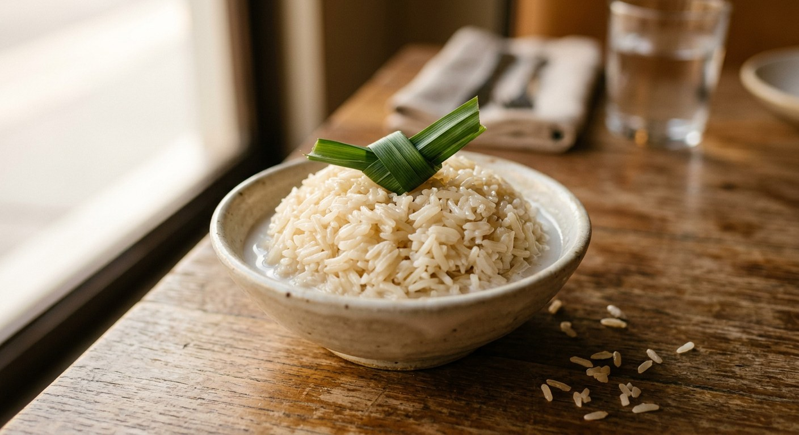

Plain Thai coconut rice — jasmine rice cooked in coconut milk with salt, sugar and pandan, stirred partway so the milk never burns. The fragrant side dish Thai cooks call khao kathi or khao man kathi, and the heart of the old khao man som tum set.

ข้าวกะทิ
The simplest Thai rice you can make is also the easiest to get wrong in Britain: jasmine rice cooked in coconut milk from the start, with salt, a little sugar and a knot of pandan. Thai cooks call it khao kathi (ข้าวกะทิ) or khao man kathi (ข้าวมันกะทิ) — "coconut-milk rice" — and it is the plain, fragrant side that older Thai menus served beside som tam long before it became the "coconut rice" line on every UK takeaway menu.
| Thai | English | Amount |
|---|---|---|
| ข้าวหอมมะลิ | Jasmine rice, aged rice preferred — rinse 2–3 times and drain | 2 cups |
| กะทิ | Coconut milk, fresh-pressed if you can; boxed works | 2 cups |
| เกลือ | Salt, Kitchen Tukata uses a full tablespoon, Cookpad a teaspoon per cup | 1 tsp – 1 tbsp |
| น้ำตาลทราย | White sugar, optional — some cooks leave it out entirely | 1/2 – 1½ tbsp |
| ใบเตย | Pandan leaves, knotted | 3 |
Khao kathi is jasmine rice (ข้าวเจ้า), not glutinous rice. The rice and the coconut milk go into the pot together and the grain cooks in the milk, taking on its oil and sweetness. The grain ends up glossy and faintly sweet, with a distinct salty-savoury bottom note — nothing like rice that has had coconut stirred through after cooking.
That point matters because of the name. In Thailand the rice cooked for khao mun gai (ข้าวมันไก่) is also called khao mun, but it is a different animal: that rice is fried in chicken fat and cooked in chicken broth with ginger. Khao kathi swaps the chicken fat for coconut milk, which is why the Thai sources below are careful to say "หุงข้าวกับกะทิสด" — cooked with fresh coconut milk — when they mean this dish.
The method across the sources is one sentence: season coconut milk with salt and sugar, cook the rice in it, and stir halfway.
Kitchen Tukata's ancient-recipe thread on Pantip is the clearest version: two cups of aged rice to two cups of fresh coconut milk — "the same amount of liquid you would use for normal rice" — with a tablespoon of salt, a tablespoon and a half of sugar, and three knotted pandan leaves. The rice goes into the cooker with the milk, and about ten minutes in you open the lid and stir, because coconut milk is sticky and the bottom layer will brown and catch if you leave it. Then it finishes, rests, and it is done.
Krua.co's food story, written from old recipe books, found the same truth the hard way: the traditional pot method stirs the rice constantly, and a rice cooker that is never opened burns the bottom brown every time — three or four stirs is what it takes.
Serve it the way it is meant to be eaten: warm and fluffed, beside green curry, a stir-fry, or on its own with a pinch more salt. And if you want the full historical context — the set where this rice sat with som tam, sweet shredded pork, green curry and tamarind nam phrik — that is the khao man som tum page.
This recipe is translated from the following Thai-language sources. Where they disagree, we've said so.
1. Cookpad — Dome Klayphaksi — https://cookpad.com/th/recipes/8150982
2. Kapook Cooking — Kitchen Tukata — https://cooking.kapook.com/view150572.html
3. Krua.co — Charinrat Jingjit — https://krua.co/food_story/coconut-milk-rice-somtum
4. Pantip 35174810 — Kitchen Tukata — https://pantip.com/topic/35174810